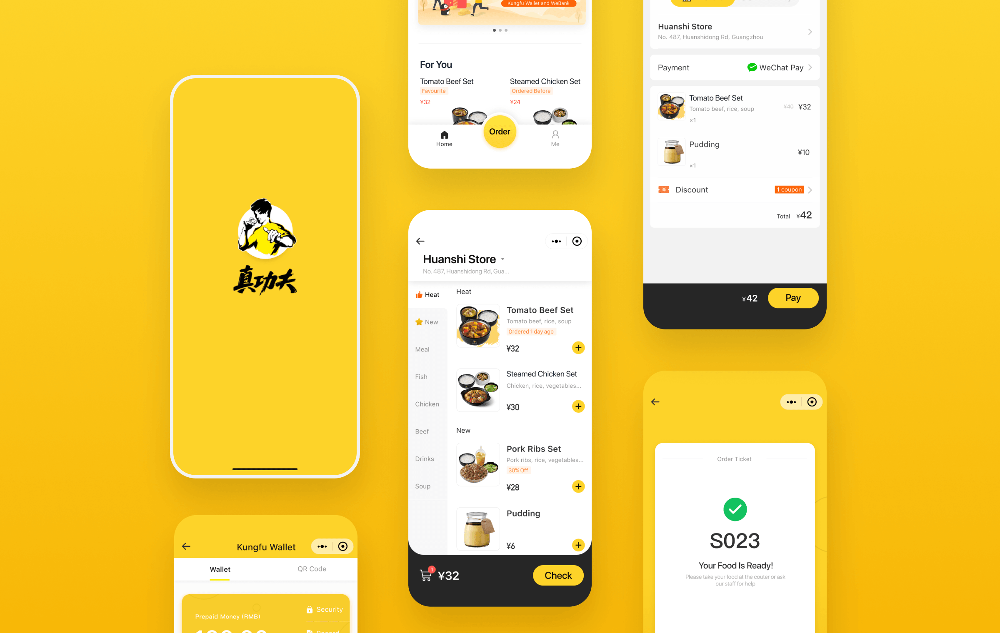

Home Screen
The order status would pop after submit, allowing users to check it anytime. Recommended food would show one’s favourite to help accelerate decision-making.
Helping a Chinese fast-food company embrace digitalization.
Kungfu is a Chinese fast-food restaurant founded over 25 years. Kungfu provides excellent quality meals and services through the standardization of Chinese food production, which makes it the only local company in the top five in the fast-food market.
As the company continued to grow, Kungfu needed to keep up with the trend of digitalization in China and provide a better dining experience to gain more customers and a better reputation.
Our goal is to improve both customers' ordering experience and restaurant staff's productivity by providing a comprehensive digital system in the thoroughgoing retail routine, and lastly deliver higher business value for the brand.
We started with gathering necessary information of the existent users to get a clear view of the current user journey.

Our solution is Kungfu Order (WeChat Mini Program): A phone-ordering service for users to make order fast without waiting in the queue or any downloads.


We applied the method of lean product and agile development in this project, which focus on building minimun variable products.
As the lead designer, I needed to deliver the design with rapid prototyping and evaluate them with usability testing. We quickly launched the first version to see whether the users would prefer phone-ordering than the conventional way.

While the company popularized the services to more restaurants around the country, some new problems also exposed:
Low conversion rate.
The completion rate from the menu to finish remained only 50%, which means
that users were having
trouble in choosing the food they need.
Lack of user growth and retention.
While we had complete the main feature, we needed to
improve
the products' capability in growth hacking to increase the quantity and loyalty of our customers.
Inconsistent visual language
The interface design looks a bit rough under agile
development. A
consistent design system would help improve the design qupty in design sprints.


At this stage, we have access to overwhelming users data. Data analysis gave me a new perspective to find UX problems. Also, our team would go to restaurants every month to get inspiration through interview and observation.
I applied the method of the Atomic design system and rebuilt all the UI elements to formulate consistent interface and experience. Collaborating with engineers, we implemented every design tokens, components and templates to maintain a cohesive design during fast scaling.

The order status would pop after submit, allowing users to check it anytime. Recommended food would show one’s favourite to help accelerate decision-making.
We enhanced the menu with organized catalogue and intuitive customizing meal sets. It is an example of how motion provides meanings for better cognition.
I tried to promote recharge in the purchase process and provided an appropriate option related to the current bill — this change attribute over 30% conversion rate and gained more user retention.
Inspired by bordering pass, I redesigned the order screen. The customers could be aware of the order status. Large number increase legibility when showing their phone to get the meal in a noisy environment.

Conversion rate 70%: After the improvements the overall completion rate rised.
Quick order in 90 seconds: Most of the users open Kungfu Order and finish the process within 2 minutes.
Award: “WeChat Power” Annual Smart Retail of 2018.
A digitalized services and mindset for our client: We delivered both integrated services and the concept of digital operation to our client. We grow and explore together along the way.
Data-Inspired design: I learned how to measure user experience, and the combination of both data analysis and interview give me a whole picture of macro and micro user experience.
Design system practice: I tried to introduce a design system in the project, and it did not just improve the quality of the product, but also saved a bunch of time for both designers and developers.
How design contributes business values: At the very beginning, the company focused more on profits. Design was just an inessential part. I tried a lot to communicate the role of design in building a great product and brand. To do that, I have to answer to myself first.
This is the first project that I’ve played the role of the lead product designer. I couldn’t do that without the support of my lovely team!